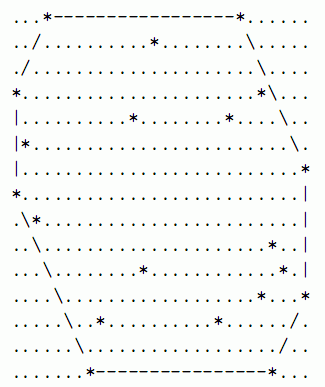

* 第1行: 一个整数，N * 第2..N+1行: 每行包含2个用空格隔开的整数，x[i]和y[i]，即第i股泉水的位 置坐标
为了防止口渴的食蚁兽进入他的农场，Farmer John决定在他的农场周围挖一条护城河。农场里一共有N(8<=N<=5,000)股泉水，并且，护城河总是笔直地连接在河道上的相邻的两股泉水。护城河必须能保护所有的泉水，也就是说，能包围所有的泉水。泉水一定在护城河的内部，或者恰好在河道上。当然，护城河构成一个封闭的环。 挖护城河是一项昂贵的工程，于是，节约的FJ希望护城河的总长度尽量小。请你写个程序计算一下，在满足需求的条件下，护城河的总长最小是多少。 所有泉水的坐标都在范围为(1..10,000,000,1..10,000,000)的整点上，一股泉水对应着一个唯一确定的坐标。并且，任意三股泉水都不在一条直线上。 以下是一幅包含20股泉水的地图，泉水用"*"表示

图中的直线，为护城河的最优挖掘方案，即能围住所有泉水的最短路线。 路线从左上角起，经过泉水的坐标依次是：(18,0),(6,-6),(0,-5),(-3,-3),(-17,0),(-7,7),(0,4),(3,3)。绕行一周的路径总长为70.8700576850888(...)。答案只需要保留两位小数，于是输出是70.87。
* 第1行: 一个整数，N * 第2..N+1行: 每行包含2个用空格隔开的整数，x[i]和y[i]，即第i股泉水的位 置坐标
* 第1行: 输出一个数字，表示满足条件的护城河的最短长度。保留两位小数
20
2 10
3 7
22 15
12 11
20 3
28 9
1 12
9 3
14 14
25 6
8 1
25 1
28 4
24 12
4 15
13 5
26 5
21 11
24 4
1 8
70.87